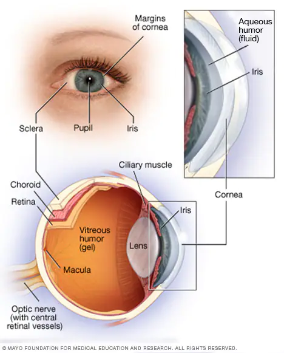

DALTONISMO

Panorama general
El daltonismo o, más exactamente, la visión de color mala o deficiente, es una incapacidad para ver la diferencia entre ciertos colores. Aunque mucha gente usa comúnmente el término "daltonismo" para esta afección, el verdadero daltonismo —en el que todo se ve en tonos de blanco y negro— es raro.
El daltonismo suele ser heredado. Los hombres son más propensos a nacer con daltonismo. La mayoría de las personas con daltonismo no puede distinguir entre ciertos tonos de rojo y verde. Menos comúnmente, las personas con daltonismo no pueden distinguir entre los tonos de azul y amarillo.
Ciertas enfermedades oculares y algunos medicamentos también pueden causar daltonismo.
Síntomas
Puede ser que tengas una deficiencia en la visión de color y no lo sepas. Algunas personas descubren que ellos o sus hijos tienen la afección cuando causa confusión; como, por ejemplo, cuando tienen problemas para diferenciar los colores en un semáforo o interpretar materiales didácticos codificados por colores.
Las personas afectadas por el daltonismo pueden no ser capaces de distinguir:
- Distintos tonos de rojo y verde
- Distintos tonos de azul y amarillo
- Cualquier color
La deficiencia cromática más común es una discapacidad de ver algunos tonos de rojo y verde. Con frecuencia, una persona que tiene una deficiencia con los tonos rojo y verde o azul y amarillo puede percibir ambos colores en cierta medida. Los defectos pueden ser leves, moderados o graves.
Cuándo consultar al médico
Si sospechas que tienes problemas para distinguir ciertos colores o que tu visión de color cambia, consulta a un oftalmólogo para que lo examine. Es importante que los niños realicen exámenes oculares exhaustivos, incluida una prueba de visión cromática, antes de comenzar la escuela.
No hay cura para las deficiencias de color heredadas, pero si la causa es una enfermedad o una enfermedad ocular, el tratamiento puede mejorar la visión del color.
Causas
Ver los colores a través del espectro de luz es un proceso complejo que comienza con la capacidad de los ojos para responder a las diferentes longitudes de onda de la luz.
La luz, que contiene todas las longitudes de onda de color, entra en el ojo a través de la córnea, y pasa por el cristalino y el tejido transparente y gelatinoso del ojo (humor vítreo) para llegar las células sensibles a las longitudes de onda (conos) que están en la parte posterior del ojo, en la zona macular de la retina. Los conos son sensibles a las longitudes de onda de luz cortas (azul), medias (verde) o largas (rojo). Las sustancias químicas en los conos desencadenan una reacción y envían la información de la longitud de onda a través del nervio óptico a tu cerebro.
Si tus ojos son normales, percibes el color. Pero si tus conos carecen de una o más sustancias químicas sensibles a la longitud de onda, no podrás distinguir los colores rojo, verde o azul.
El daltonismo tiene varias causas:
- Trastorno heredado. Las deficiencias de color heredadas son mucho más comunes en los hombres que en las mujeres. La deficiencia de visión cromática más común es la del rojo-verde, y la del azul-amarillo es mucho menos común. Es raro no tener visión de color en absoluto.
Puedes heredar el trastorno en un grado leve, moderado o grave. Las deficiencias de color heredadas suelen afectar a ambos ojos, y la gravedad no cambia a lo largo de la vida.
- Enfermedades. Algunas afecciones que pueden causar déficits para percibir el color son la anemia de células falciformes, la diabetes, la degeneración macular, la enfermedad de Alzheimer, la esclerosis múltiple, el glaucoma, la enfermedad de Parkinson, el alcoholismo crónico y la leucemia. Puede ser que un ojo se vea más afectado que el otro, y es posible que el déficit cromático mejore si se trata la enfermedad subyacente.
- Ciertos medicamentos. Algunos medicamentos pueden alterar la visión de color, como algunos fármacos que tratan ciertas enfermedades autoinmunitarias, problemas cardíacos, presión arterial alta, disfunción eréctil, infecciones, trastornos nerviosos y problemas psicológicos.
- Envejecer. La capacidad para percibir los colores se deteriora lentamente con la edad.
- Sustancias químicas. La exposición a ciertas sustancias químicas en el lugar de trabajo, como el disulfuro de carbono y los fertilizantes, puede provocar pérdida de la visión de color.